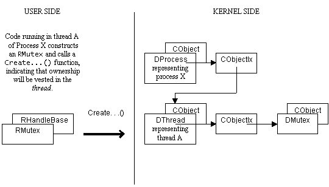
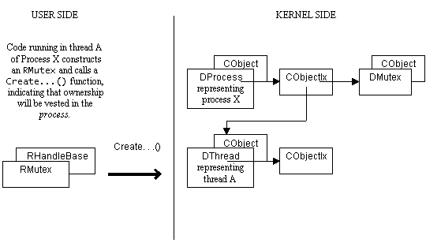

|
| |
This is the issue of handle ownership.
Threads and processes each maintain a list of objects to which they refer. This list is an object index and is the way in which handle-numbers representing these objects are generated.
When user code causes a Kernel object (e.g. a mutex) to be created, ownership of the handle which is opened on that object may be vested either in the thread or the process. If ownership is vested in the thread, the handle associated with that object is said to be thread-relative, conversely, if ownership is vested in the process, the handle associated with that object is said to be process-relative.
The following diagram shows the case where code belonging to thread A creates a mutex and vests ownership of the handle in the thread.

Thread-relative handle
Compare with the following case where ownership of the mutex handle is vested in the process.

Process-relative handle
In both cases, the mutex object is added to the appropriate Kernel container which can be considered as the owner of the object.
For a thread-relative handle, the associated Kernel object is closed if the thread dies. For a process-relative handle, the Kernel object is closed if the process dies. Such an object is not closed if any thread belonging to that process dies; the object remains in existence for the lifetime of the process, or until all references to it have been explicitly closed.
See also:
Copyright ©2002 Symbian Ltd. 6.1-00174 |
|